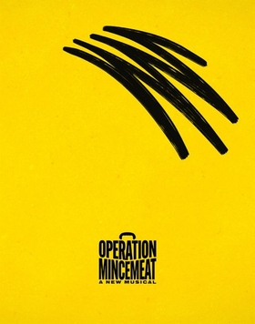

Article

Operation Mincemeat is a musical comedy with book, music and lyrics by David Cumming, Felix Hagan, Natasha Hodgson and Zoë Roberts (known as the musical comedy troupe SpitLip, with this show being their debut production). The plot is based on Operation Mincemeat, a Second World War British deception operation. The show received six Laurence Olivier Award nominations, winning two for Best New Musical and Best Actor in a Supporting Role in a Musical for Jak Malone, and garnered four Tony Award nominations including Best Musical, and won for Best Featured Actor in a Musical for Malone.
Background
The basis of the musical is Operation Mincemeat, the successful 1943 British deception operation to disguise the Allied invasion of Sicily during the Second World War by making the Axis powers believe an invasion of Sardinia or Greece was actually imminent.
Synopsis
Act I
In 1943, naval intelligence officer Ewen Montagu welcomes the audience to MI5, where the "elite" of the British military contribute to the World War II effort ("Born to Lead"). Colonel Johnny Bevan informs his subordinates that the British government requires a strategy to convince the Nazis that the Allied Forces are planning to invade Sardinia rather than their actual (and more obvious) target, Sicily. Several officers, including Montagu and Ian Fleming, present their ideas, but despite their conviction of their own brilliance ("God That's Brilliant"), Bevan dismisses them all as unrealistic and poorly planned. Sulking after his rejection, Montagu encounters Air Force officer and "amateur naturalist" Charles Cholmondeley, who has formulated a strategy code-named "Operation Mincemeat", but is convinced of its futility after being bullied out of line by Montagu and his colleagues ("Dead in the Water"). Montagu reads his plan, and despite declaring it "insane", recognises its potential and convinces Charles that they should team up to pitch Mincemeat to Bevan, noting his own natural "flair for presentation" will bolster Charles' lack of confidence.
Meanwhile, Bevan's secretary Hester Leggatt welcomes new clerk Jean Leslie to her team, who is eager to disrupt the typically side-lined role of women in MI5 and dreams of ranking alongside the male officers ("All the Ladies"). Although Jean tries to stop them while bringing Bevan tea, Montagu and Charles arrive at the last minute to pitch Mincemeat. After Charles fumbles their presentation, Montagu recognises Jean's worthwhile attempts to help and drafts her in to explain the plan: MI5 will obtain a male corpse, dress it as a British soldier who has drowned following a plane crash at sea, plant documents on it "revealing" the Allied plans to invade Sardinia, and place it off the coast of neutral Spain, where Nazi spies will discover it and use the documents as cause to move their troops from Sicily ("The Pitch"). Bevan is highly sceptical, but concedes that it is the one decent idea he has heard and allows the operation to proceed. Jean and Hester are officially drafted in as support, but Bevan covertly assigns Hester to investigate Montagu, who is believed to be in contact with his brother Ivor, a filmmaker who is suspected to be a spy for the Russian government.
Together, Montagu, Charles, Jean and Hester create a fake Royal Marines major, "Bill Martin". To ensure his identity is "watertight", Hester falsifies numerous identification papers, Charles designs an airtight canister to ensure the corpse can be transported without rotting and Montagu and Jean source receipts for a week of leisure in London (by literally having a week of leisure in London). Montagu purchases an engagement ring so the receipt can be on Bill's person, along with a photograph of Jean posing as Bill's imagined fiancée ("Making a Man"). Charles notices that Montagu occasionally "misplaces" important files, but suppresses his concerns. A corpse, that of an unnamed transient who ingested rat poison, is obtained with the help of Montagu's morally dubious acquaintance Bernard Spilsbury ("Spilsbury"); the team are concerned about using it without the knowledge and consent of any relatives, let alone knowing his real name, but Montagu is adamant that it is better if the corpse is a "nobody". Bevan is unimpressed by the team's spending spree, but concedes that their creation is believable, suggesting that Bill should be carrying a letter from his fiancée. After dismissing Charles and Jean's questionable efforts at writing one ("Love is a Bird"), Hester indirectly relates her own story of the lover she lost during World War I, and agrees to a deeply moved Jean's request that she write the letter herself ("Dear Bill").
That night, Montagu and Charles arrive in Scotland to load "Bill's" corpse onto the submarine HMS Seraph; its crew are told that the sealed canister contains meteorological equipment ("Sail On, Boys"). Charles is deeply insecure about the result of the operation, but is swayed by Montagu into celebrating its completion in a carefree pub crawl, during which he witnesses a brief meeting between Montagu and his brother Ivor ("Just For Tonight"). Meanwhile, after enduring enemy attacks, the crew of the Seraph are unnerved by the contents of the canister but follow their orders, placing Bill in the sea off the Spanish coast before thanking him for his service.
Act II
The German army present a display of their apparent dominance, in the form of a high energy boy band performance ("Das Übermensch"). After reprimanding the audience for "appreciating" the enemy, Bevan relates the progression of Mincemeat and reveals that a problem has arisen ("Bevan's Update"). The team await news from Vice-Consul Francis Haselden in Huelva, but are dismayed to learn that the victim of an aeroplane accident he calls to report is a live American soldier, also named William; they fear it will make Bill's story less believable. Moments later, they learn Bill has also been recovered, but the Spanish government is indeed suspicious and have ordered an autopsy. They instruct Haselden to make sure the briefcase holding the false plans is seized by the Nazi-populated Spanish authorities ("The Ballad of Willie Watkins").
Charles and Jean attempt to keep working through the crises, but Montagu believes they can do no more and simply wants to enjoy himself; he is hurt by Jean reminding him that their London excursions were merely for the operation. Bevan calls the team into his office to alert them to an unexpected complication: Spilsbury's methodology is flawed and he should not have been trusted with the operation ("Spilsbury Reprise"). Montagu insists that Mincemeat is running smoothly despite the setbacks, but Bevan orders the immediate abortion of all plans ("I Call Abort"); however, this fails to reach Haselden, who diligently ensures that the autopsy is rushed and the briefcase reaches the authorities ("Haselden's Got a Good Feeling"). After an animated reprimanding by Bevan for his nonchalance and failure to obtain consent for the use of Bill's body, Montagu takes his frustration out on Jean, fully dismisses her role in Mincemeat and orders her to go back to her role as a clerk and assistant. Furious and humiliated, Jean confesses to Hester that she'd pictured the veneration they'd receive if the operation was a success; Hester gently persuades her that not everyone who works for a cause will be recognised, but that does not make them any less valuable, whether they are spearheading an operation or making tea, and Jean thanks her for helping her to "grow" ("Useful"). Hester is inspired to recruit Jean into the investigation of Montagu's brother, asking her to continue dining with Montagu and encouraging him to talk about himself. Jean agrees to swallow her pride and investigate.
Montagu orders Haselden to drop hints that the British desperately want Bill's briefcase back in the hopes of alerting German spies. After stroking Haselden's ego to get him to cooperate, Montagu describes tactics for getting people to trust him, upsetting Charles, who has grown increasingly suspicious of seeing Montagu take files out of the office. Haselden succeeds in his efforts: Bill's briefcase is taken to Berlin, but there is no sign the Germans plan on moving their troops ("Act as If"). Eventually, Montagu discovers Charles, Jean and Hester going through his possessions. Despite his protests, they read his files and learn that he is actually writing a film script about Mincemeat depicting himself as a hero. He was secreting files so that he could archive them for personal use, being careful not to let them into the wrong hands, and he was talking to Ivor, a filmmaker, to get his opinion on a rough, censored draft of the script. While appalled that he intends to sensationalise their story, Charles, Jean, and Hester conclude that Montagu is innocent of treason.
An update from Bevan then confirms that Haselden's whisper campaign has worked, and Adolf Hitler himself has ordered the transfer of German troops from Sicily to Sardinia. The Allies subsequently invade Sicily with little-to-no bloodshed. Bevan informs an ecstatic Montagu, Charles, Jean and Hester that Operation Mincemeat is officially a success, and that Montagu and Charles will receive the highest level of commendation in the British Army ("Did We Do It?"). As the team celebrate, Charles observes that the unfortunate moral of their story is that as long as you're in charge, you can do whatever you like.
To counteract this, they relate a summary of everything that occurred following the success of Mincemeat: the Second World War is won by the Allies with help from the US Army (who recruit a number of Nazis in the aftermath); Ian Fleming goes on to create James Bond; Haselden and his assistant Steve remain in Spain; Hester initiates a romance with Bevan; Jean looks ahead to the progress of feminism during and after the war; Montagu eventually makes (and acts in) his film about Operation Mincemeat; and Charles goes on to do classified work for MI5. As Bevan finishes relating the events of the operation to his superiors, they wonder who the man known as Bill Martin really was; the cast address the audience to inform them that thanks to Montagu's archives, he was eventually identified as a gardener named Glyndwr Michael, and that there is now an inscription in Huelva acknowledging that he served in the Second World War as Major William Martin ("A Glitzy Finale").
Production history
Off-West End (2019–2022)
The musical premiered at the New Diorama Theatre on 14 May 2019 for a run until 15 June. The cast featured writers Natasha Hodgson, David Cumming and Zoë Roberts with Jak Malone and Rory Furey-King.
Following the New Diorama run, the musical opened at the Southwark Playhouse with Claire-Marie Hall replacing Rory Furey-King on The Little stage from 4 to 11 January 2020. A run was scheduled at Southwark Playhouse's The Large stage from 14 to 23 May 2020, however due to the COVID-19 pandemic it was postponed. The run eventually began on 23 July 2021, where it was originally due to run until 7 August, however due to popular demand it was extended to 18 September. The musical ran for a final time at Southwark Playhouse from 14 January to 19 February 2022.
The musical's final Off-West End run opened at the Riverside Studios from 28 April to 23 July 2022. For the Riverside Studios run, Seán Carey temporarily replaced David Cumming, who broke his collarbone 10 days before opening; he returned on 18 June 2022.
West End (2023–present)
Following the success of the Off-West End productions, the musical transferred to London's West End beginning previews on 29 March 2023 at the Fortune Theatre. Originally scheduled to close after 9 July 2023, the production has been extended multiple times after receiving favourable reviews from audiences and critics. Upon departure of 4 of the original cast members in May 2024, former understudies Seán Carey and Christian Andrews were promoted to principal roles, and Emily Barber and Chloe Hart joined as "Ewen Montagu & Others" and "Johnny Bevan & Others" respectively, with Claire-Marie Hall staying on as "Jean Leslie & Others". Geri Allen and Holly Sumpton continued on as understudies with George Jennings and Jonty Peach completing the understudy team. The cast were joined by Madeleine Jackson-Smith as "Jean Leslie & Others" in December 2024 upon Claire-Marie Hall's imminent departure to Broadway to join the original cast members there. The show will play until at least 20 February 2027, marking its 18th extension. As of May 2025, it is the best received show in the West End, having received 88 five-star reviews.
Broadway (2025–present)
The musical transferred to Broadway in 2025 for an originally slated 16-week limited run. Previews began on 15 February at the Golden Theatre and officially opened on 20 March to generally positive reviews. The original London cast reprised their roles for the Broadway production. Days after its first preview, the show announced an extended run due to popular demand, and subsequently extended multiple times into July 2026.
It was reported that certain musical numbers and lines seemed to resonate more strongly with the New York City audience due to timing and the American political context, such as the line: "If people like us just blindly follow orders, the fascists won't need to bash the door down. They'll have already won."
Following high audience demand to attend the final performance of the original Broadway cast, an additional show was added for the evening of their originally scheduled February 22, 2026 closing matinee. Due to severe winter weather preventing nearly all Broadway shows from performing as scheduled, this performance was cancelled and substituted with a free Instagram Live concert performance at the Laurie Beechman Theatre. Despite the cancelled final performance, Operation Mincemeat hit its highest weekly box office gross of the run up until that point.
Upon the departure of the original British cast in February 2026, former understudies Jessi Kirtley, Brandon Contreras, and Amanda Jill Robinson were promoted to principal roles, and Jeff Kready and Julia Knitel joined in the roles of "Hester Leggatt & Others" and "Ewen Montagu & Others" respectively. Gerianne Pérez and Sam Hartley continued on as understudies, and Robert Ariza, Lexi Rabadi, and Allison Guinn rounded out the understudy cast.
World tour (2026)
In May 2025, it was announced that the musical would embark on a world tour, beginning with an extended 40-week stay in the UK, before heading globally to the US, Australia, Canada, China, Mexico and New Zealand. The tour began on 16 February 2026 at The Lowry, Salford. The cast for the UK tour includes Charlotte Hanna-Williams, Seán Carey, Christian Andrews and Holly Sumpton returning from the West End cast with Jamie-Rose Monk, Katy Ellis, Georgia Hagen, Jordan Pearson and Morgan Phillips.
Roles and casts
The five members of the principal cast each play multiple roles, often gender-swapped.
| Character | Off-West End 2019 | Off-West End 2020–2022 | West End 2023 | Broadway 2025 | UK tour 2026 | US tour 2026 |
|---|---|---|---|---|---|---|
| Ewen Montagu & Others | Natasha Hodgson | Holly Sumpton | Katie Kleiger | |||
| Charles Cholmondeley & Others | David Cumming | Seán Carey | Jake Bentley Young | |||
| Johnny Bevan & Others | Zoë Roberts | Jamie-Rose Monk | Mariah Copeland | |||
| Hester Leggatt & Others | Jak Malone | Christian Andrews | Luke Antony Neville | |||
| Jean Leslie & Others | Rory Furey-King | Claire-Marie Hall | Charlotte Hanna-Williams | Erin Ramirez | ||
Notable replacements
West End
- Ewen Montagu & Others: Emily Barber, Alex Young
Broadway
- Ewen Montagu & Others: Julia Knitel
- Charles Cholmondeley & Others: Brandon Contreras
- Hester Leggatt & Others: Jeff Kready
- Jean Leslie & Others: Jessi Kirtley
Musical numbers
Act I
- Born to Lead
- God That's Brilliant
- Dead in the Water
- All the Ladies
- The Pitch
- Making a Man
- Spilsbury
- Love is a Bird
- Dear Bill
- Sail On, Boys
- Just For Tonight
Act II
- Das Übermensch
- Bevan's Update
- The Ballad of Willie Watkins
- Spilsbury Reprise
- I Call Abort
- Haselden's Got a Good Feeling
- Useful
- Act as If
- Did We Do It?
- A Glitzy Finale
Cast recording
The original West End cast recording for Operation Mincemeat was released on 12 May 2023, on streaming platforms and physically on CD and vinyl. It was released by Sony Music and produced by Steve Sidwell. A live recording of Jak Malone's "Dear Bill" at the Fortune Theatre was also released.
Critical reception
The show has received significant critical acclaim in the West End. In his five star review for The Stage, Tim Bano called it "A brilliant spy thriller, a brilliant comedy, and a brilliant musical all rolled into one, it is exhilarating to see it hit the West End." On Broadway, the show has received generally positive reviews. Frank Rizzo, in his review for Variety, applauded the show for its "comic madness and theatrical joy." Shania Russell from Entertainment Weekly graded the show an A and called it "An irresistible musical farce that brings British boldness and belly laughs to Broadway" and also said that the show is an "undeniable success". Greg Evans of Deadline praised the show exclaiming "Mincemeat is a triumphant blend of slapstick, farce, intricate plotting, deceptively simple characterizations, terrific music and deliciously energetic performances."
Awards and nominations
Off-West End production
| Year | Award | Category | Nominee | Result |
|---|---|---|---|---|
| 2019 | Stage Debut Awards | Best Composer/Lyricist | David Cumming, Felix Hagan, Natasha Hodgson and Zoë Roberts | Won |
| 2019 | The Offies | Best New Musical | Nominated | |
| 2019 | The Offies | Best Company Ensemble | Won | |
| 2019 | The Offies | Best Set Design | Helen Coyston | Nominated |
| 2019 | The Offies | Best Musical Director | Felix Hagan | Nominated |
| 2019 | The Offies | Best Sound Design | Dan Balfour | Nominated |
| 2022 | West End Wilma Awards | Best Off-West End Show | Nominated | |
| 2022 | West End Wilma Awards | Best Performer in an Off-West End Show | Jak Malone | Nominated |
| 2023 | The Offies | Best Musical | Won | |
| 2023 | The Offies | Best Performance Ensemble | Nominated | |
| 2023 | The Offies | Best Costume Design | Helen Coyston | Nominated |
West End production
| Year | Award | Category | Nominee | Result |
|---|---|---|---|---|
| 2023 | Stage Debut Awards | Best Creative West End Debut | David Cumming, Felix Hagan, Natasha Hodgson and Zoë Roberts | Nominated |
| 2023 | Stage Debut Awards | Best Creative West End Debut | Joe Bunker | Nominated |
| 2023 | West End Wilma Awards | Best West End Show | Won | |
| 2023 | West End Wilma Awards | Rising Star | Jak Malone | Won |
| 2023 | West End Wilma Awards | Best Performer in a West End Show | Natasha Hodgson | Nominated |
| 2023 | West End Wilma Awards | Best Performer in a West End Show | Jak Malone | Nominated |
| 2023 | West End Wilma Awards | Best Understudy | Holly Sumpton | Won |
| 2024 | WhatsOnStage Awards | Best New Musical | Won | |
| 2024 | WhatsOnStage Awards | Best Performer in a Musical | Natasha Hodgson | Nominated |
| 2024 | WhatsOnStage Awards | Best Supporting Performer in a Musical | Jak Malone | Nominated |
| 2024 | WhatsOnStage Awards | Best Graphic Design | Bob King Creative | Nominated |
| 2024 | Laurence Olivier Awards | Best New Musical | David Cumming, Felix Hagan, Natasha Hodgson and Zoë Roberts (music, lyrics, and book) | Won |
| 2024 | Laurence Olivier Awards | Best Actor in a Musical | David Cumming | Nominated |
| 2024 | Laurence Olivier Awards | Best Actress in a Musical | Natasha Hodgson | Nominated |
| 2024 | Laurence Olivier Awards | Best Actor in a Supporting Role in a Musical | Jak Malone | Won |
| 2024 | Laurence Olivier Awards | Best Actress in a Supporting Role in a Musical | Zoë Roberts | Nominated |
| 2024 | Laurence Olivier Awards | Outstanding Musical Contribution | Steve Sidwell (orchestrations), Joe Bunker (musical direction) | Nominated |
| 2025 | West End Wilma Awards | Best Understudy | Geri Allen | Won |
Broadway production
| Year | Award | Category | Nominee | Result |
|---|---|---|---|---|
| 2025 | Drama League Awards | Outstanding Production of a Musical | Nominated | |
| 2025 | Drama League Awards | Outstanding Direction of a Musical | Robert Hastie | Nominated |
| 2025 | Drama League Awards | Distinguished Performance | Jak Malone | Nominated |
| 2025 | Outer Critics Circle Awards | Outstanding New Broadway Musical | Nominated | |
| 2025 | Outer Critics Circle Awards | Outstanding Featured Performer in a Broadway Musical | Jak Malone | Won |
| 2025 | Outer Critics Circle Awards | Book of a Musical | David Cumming, Felix Hagan, Natasha Hodgson and Zoë Roberts | Nominated |
| 2025 | Outer Critics Circle Awards | Outstanding New Score | David Cumming, Felix Hagan, Natasha Hodgson and Zoë Roberts | Nominated |
| 2025 | Outer Critics Circle Awards | Outstanding Direction of a Musical | Robert Hastie | Nominated |
| 2025 | Outer Critics Circle Awards | Outstanding Choreography | Jenny Arnold | Nominated |
| 2025 | Drama Desk Awards | Outstanding Featured Performance in a Musical | Jak Malone | Won |
| 2025 | Drama Desk Awards | Outstanding Lyrics | David Cumming, Felix Hagan, Natasha Hodgson and Zoë Roberts | Nominated |
| 2025 | Drama Desk Awards | Outstanding Book of a Musical | David Cumming, Felix Hagan, Natasha Hodgson and Zoë Roberts | Nominated |
| 2025 | Tony Awards | Best Musical | Nominated | |
| 2025 | Tony Awards | Best Performance by an Actor in a Featured Role in a Musical | Jak Malone | Won |
| 2025 | Tony Awards | Best Original Score (Music and/or Lyrics) Written for the Theatre | David Cumming, Felix Hagan, Natasha Hodgson and Zoë Roberts | Nominated |
| 2025 | Tony Awards | Best Book of a Musical | David Cumming, Felix Hagan, Natasha Hodgson and Zoë Roberts | Nominated |
| 2025 | Dorian Awards | Outstanding Broadway Musical | Nominated | |
| 2025 | Dorian Awards | Outstanding Featured Performance in a Broadway Musical | Jak Malone | Won |
Historical research and commemoration
In real life, the false love letters for Operation Mincemeat may or may not have been written by Hester Leggatt; according to Ben Macintyre, these were written by Leggatt, but Denis Smyth identifies the author as Paddy Bennett, later Lady Ridsdale, who claimed she had written them. In any case, a group of fans of the musical, known as Mincefluencers, were inspired to research into the real life of Hester, as little was known about her. They managed to get in contact with MI5 and were able to find out some key information about Hester. They discovered that her surname was spelled Leggatt rather than Leggett, and that she worked for Osbert Sitwell in the 1930s, for MI5 during the Second World War and later for the British Council. On 11 December 2023, a plaque was installed at the Fortune Theatre in commemoration of Leggatt.
Licensing
On 4 April 2024, Concord Theatricals announced that they secured from Avalon exclusive worldwide secondary licensing rights to the musical with a release time to be announced at a later date.
References
- "Operation Mincemeat | Whats On". New Diorama. Retrieved 17 March 2023.
- "In 'Operation Mincemeat,' the Theater of War Is a Comedy". The New York Times. 9 June 2023. Retrieved 31 October 2023.
- MincemeatLiveVEVO (12 May 2023). Operation Mincemeat - A Glitzy Finale (Official Audio). Retrieved 10 July 2025 via YouTube.
- "Operation Mincemeat". Southwark Playhouse. Archived from the original on 1 October 2025. Retrieved 1 July 2022.
- "Operation Mincemeat". Riverside Studios. Retrieved 17 March 2023. (dead link)
- Thomas, Sophie (18 November 2022). "'Operation Mincemeat' to transfer to the West End". London Theatre. Retrieved 22 February 2024.
- "Operation Mincemeat extends again at the West End's Fortune Theatre [Updated]". West End Theatre. 5 February 2024. Retrieved 22 February 2024.
- Wood, Alex. "Operation Mincemeat Welcomes New Cast Members". Whatsonstage. Retrieved 8 March 2026.
- Wood, Alex. "Operation Mincemeat announces West End Casting update". Whatsonstage. Retrieved 8 March 2026.
- Wood, Alex (16 February 2026). "Operation Mincemeat extends West End run into 2027". Whatsonstage. Retrieved 17 April 2026.
- "Operation Mincemeat opens on Broadway – read our review". 21 March 2025. Retrieved 31 May 2025.
- Culwell-Block, Logan (1 October 2024). "London's Olivier-Winning Operation Mincemeat Will Open on Broadway This Season". Playbill. Retrieved 20 October 2024.
- Evans, Greg (1 October 2024). "Olivier-Winning 'Operation Mincemeat' Musical Comedy Arrives On Broadway In February". Deadline. Retrieved 1 October 2024.
- Cristi, A. A. "Review Roundup: OPERATION MINCEMEAT Opens On Broadway". BroadwayWorld. Retrieved 21 March 2025.
- "Operation Mincemeat announces Broadway casting". What's On Stage. 1 November 2024. Retrieved 1 November 2024.
- News Team (19 February 2025). "Operation Mincemeat extends its run on Broadway | West End Theatre". www.westendtheatre.com. Retrieved 22 February 2025.
- Evans, Greg (19 February 2025). "'Operation Mincemeat' Musical Extends Broadway Run By Four Weeks – Update". Deadline. Retrieved 5 May 2025.
- Rabinowitz, Chloe. "OPERATION MINCEMEAT Extends for a Second Time Through Late August". BroadwayWorld. Retrieved 16 March 2025.
- Evans, Greg (24 March 2025). "Broadway's 'Operation Mincemeat' Extends Into 2026; $79 Ticket Draw Announced". Deadline. Retrieved 24 March 2025.
- Rook, Olivia (14 October 2025). "'Operation Mincemeat' tickets available through March 2026". New York Theatre Guide. Retrieved 16 December 2025.
- Jonah de Forest for Broadway.com (19 November 2025). "'Operation Mincemeat' extends its run through April 2026". Broadway News. Retrieved 16 December 2025.
- Wild, Stephi. "OPERATION MINCEMEAT Extends For a Sixth Time". BroadwayWorld. Retrieved 16 December 2025.
- Lyall, Sarah (10 March 2025). "How 'Operation Mincemeat,' a Very British Hit, Was Fine-Tuned for Broadway". The New York Times. Retrieved 27 July 2025.
- Rubin, Rebecca (29 May 2025). "How the Very British Musical 'Operation Mincemeat' Became a Broadway Darling". Variety. Retrieved 27 July 2025.
- Culwell-Block, Logan (6 February 2026). "Operation Mincemeat Original Cast Adds 1 Final Broadway Performance". Playbill.
- Evans, Greg (22 February 2026). "'Operation Mincemeat' Departing Original Cast To Perform Livestream Concert This Evening As Final Stage Performance Gets Blizzard-Canceled". Deadline. Retrieved 23 February 2026.
- Culwell-Block, Logan (24 February 2026). "Original Operation Mincemeat Cast Final Week Leads to Top Box Office of Entire Run, and More From the Blizzard Broadway Grosses". Playbill.
- McDermott, Jim (25 February 2026). "Grosses analysis: 'Operation Mincemeat' original cast ends strong, 'Every Brilliant Thing' starts strong and more". Broadway News. Retrieved 25 February 2026.
- Gordon, David (13 February 2026). "Julia Knitel, Jeff Kready are the New Recruits of Operation Mincemeat". TheaterMania. Retrieved 25 February 2026.
- Culwell-Block, Logan (25 February 2026). "Photos: Operation Mincemeat Welcomes an All-New, All-American Cast". Playbill.
- "Operation Mincemeat to embark on first ever tour next year". 13 May 2025. Retrieved 13 May 2025.
- Dunlop, Amanda (25 February 2026). "Operation Mincemeat on tour review – the hit musical comedy sails on triumphantly". WhatsOnStage. Retrieved 25 February 2026.
- "Operation Mincemeat review – irrepressible wartime musical is a West End triumph". The Guardian. 10 May 2023. Retrieved 31 October 2023.
- Wood, Alex (20 May 2019). "Review: Operation Mincemeat (New Diorama Theatre)". What's On Stage. Retrieved 17 October 2023.
- Benedict, David (1 September 2021). "'Operation Mincemeat' Review: Hilarious Small-Scale Musical Could Become a Big Hit". Variety. Retrieved 17 March 2023.
- Millward, Tom (3 March 2023). "Complete cast for Operation Mincemeat in the West End confirmed". What's On Stage. Retrieved 17 October 2023.
- "Operation Mincemeat announces tour company". 8 December 2025. Retrieved 18 February 2026.
- "Operation Mincemeat Finds Full Casting for North American Tour". Playbill. 29 July 2026. Retrieved 29 July 2026.
- "Operation Mincemeat reveals new cast to join the hit West End show [Updated] | West End Theatre". West End Theatre. 8 May 2024. Retrieved 9 May 2024.
- Wood, Alex (1 May 2025). "Alex Young to join Operation Mincemeat in the West End". WhatsOnStage. Retrieved 23 October 2025.
- Putnam, Leah (12 May 2023). "Original London Cast Recording of Operation Mincemeat Drops May 12". Playbill. Retrieved 18 October 2023.
- "'Operation Mincemeat' To Release Original Cast Recording In May". The Indiependent. 11 April 2023. Retrieved 31 October 2023.
- "Operation Mincemeat releases Jak Malone live recording of "Dear Bill"". WhatsOnStage. 20 May 2025. Retrieved 1 August 2025.
- Bano, Tim (10 May 2023). "Operation Mincemeat, Fortune Theatre Review". The Stage. Archived from the original on 10 May 2023. Retrieved 29 April 2024.
- Rizzo, Frank (21 March 2025). "'Operation Mincemeat' Review: Broadway Transfer of the Olivier-Winning Musical Has Absurdity, Laughs and Heart". Variety. Retrieved 21 March 2025.
- "'Operation Mincemeat' review: The British hit delivers boldness, big laughs". Entertainment Weekly. Retrieved 21 March 2025.
- Evans, Greg (21 March 2025). "Broadway's 2024–2025 Season: 'Operation Mincemeat' & All Of Deadline's Reviews". Deadline. Retrieved 22 March 2025.
- "Nominations in full: 24th Annual WhatsOnStage Awards". What's On Stage. 7 December 2023. Retrieved 10 December 2023.
- "Olivier awards 2024: complete list of nominations". The Guardian. 12 March 2024. ISSN 0261-3077. Retrieved 12 March 2024.
- Baker, Ed. "West End Wilma Awards Winners 2025". westendwilma. Retrieved 8 March 2026.
- Dillon, Luke (22 April 2025). "New York: Drama League Awards 2025 nominations announced including Death Becomes Her, Operation Mincemeat, Gypsy & John Proctor is The Villain". West End Theatre. Retrieved 22 April 2025.
- Evans, Greg (25 April 2025). "'Death Becomes Her' Broadway Musical Leads Outer Critics Circle Award Nominees – Complete List". Deadline. Retrieved 25 April 2025.
- "2024–2025 Drama Desk Awards nominations announced". ny1.com. Retrieved 30 April 2025.
- Grein, Paul (1 May 2025). "'Buena Vista Social Club,' 'Death Becomes Her' and 'Maybe Happy Ending' Lead 2025 Tony Award Nominations: Full List". Billboard. Retrieved 1 May 2025.
- "'Death Becomes Her' leads nominations for Dorian Theater Awards". Broadway News. 14 May 2025. Retrieved 14 May 2025.
- Macintyre, Ben (2010). Operation Mincemeat. London: Bloomsbury. ISBN 978-1-4088-0921-1.
- Smyth, Denis (2010). Deathly Deception: The Real Story of Operation Mincemeat. London: Oxford University Press. ISBN 978-0-19-923398-4.
- "Fan campaign confirms lost Operation Mincemeat character details". What's On Stage. 30 August 2023. Retrieved 9 September 2023.
- Macintyre, Ben (9 September 2023). "How musical fans forced MI5 to come clean". The Times. ISSN 0140-0460. Retrieved 9 September 2023.
- "Dear Hester: how fans uncovered a missing piece of Operation Mincemeat's history". The Stage. Retrieved 28 September 2023.
- "Operation Mincemeat to unveil plaque for Hester Leggatt following search for character's history". What's On Stage. 24 November 2023. Retrieved 24 November 2023.
- Clarke, Paul (31 December 2023). "Looking back at 2023 – part two". Event Photography London. Retrieved 8 January 2024.
- "Operation Mincemeat". Concord Theatricals. Retrieved 6 April 2024.
- "Concord Theatricals Acquires From Avalon Secondary Licensing Rights for Operation Mincemeat by Spitlip". Concord Theatricals. 4 April 2024. Retrieved 20 October 2024.